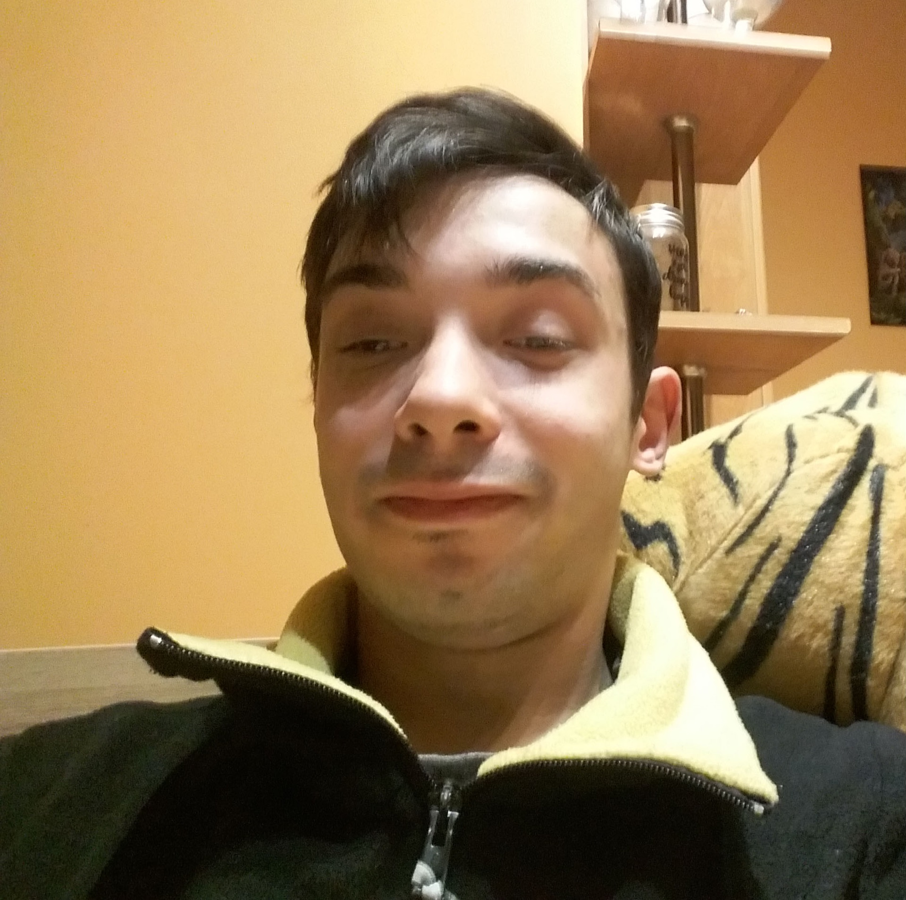

<div class="ui container" id="about" style="color: black">
    <div class="ui segment">
        <p>
            <div class="ui circular left floated image">
                
            </div>
            <div class="right ">
            <div class="ui header large">Pare słów o mnie</div>
                <div class="right floated big-text">
                    <h3>Wykształcenie</h3>
                    <p>Zespół Szkół Ekonomicznych im. Mikołaja Kopernika </p>
                    <p>profil: Technik Informatyk</p>
                    <h3>Doświadczenie</h3>
                    <p>1. Staż zawodowy w Dreźnie w firmie WBS Training który obejmował:</p>
                    <ul>
                        <li>Tworzenie statycznych stron internetowych</li>
                        <li>Prace zespołową nad wspólnym projektem</li>
                        <li>Zawodowy kontakt z językiem angielskim</li>
                        <li>Trenowanie umiejetności miekkich poprzez prezentacje efektów pracy w postaci prezentacji</li>
                    </ul>
                    <p>2. Własne amatorskie projekty wynikające z pasji do programowania</p>
                    <h3>W wolnym czasie</h3>
                    <p>Trochę o moich hobby</p>
                </div>
            </div>    
        </p>
    </div>


</div>